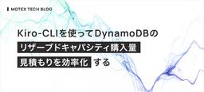

MOTEX TECH BLOG
https://tech.motex.co.jp/
エムオーテックス株式会社が運営するテックブログです。
フィード

Kiro-CLIを使ってDynamoDBのリザーブドキャパシティ購入量見積もりを効率化する
MOTEX TECH BLOG
DynamoDBリザーブドキャパシティの購入検討を効率化するため、Kiro CLIを使ったグラフ生成手順を解説。効率的な作業と共通認識の形成を実現しました。
3日前
IaC未経験者によるCloudFormationスタック分割の記録
MOTEX TECH BLOG
IaC未経験者がCloudFormationのスタック分割に挑戦した経験を記録した記事です。具体例と考え方を通じて、スタック分割を考えるヒントを得られます。
4日前
CloudFormation で Amazon Bedrock Knowledge Bases を構築してみた - Auth0 Changelog 分析システムを事例に
MOTEX TECH BLOG
Amazon Bedrock Knowledge Baseを活用し、Auth0 Changelogの自動化分析システムを構築。CloudFormationを使用した設定手法を解説。
5日前

macOSデバイスへのログイン時に自動でLimaのインスタンスを起動する方法
MOTEX TECH BLOG
本記事ではmacOSログイン時にLimaインスタンスを自動起動する設定方法とパス設定問題の解決手順を紹介します。
9日前
自社のパワーポイントテンプレートを使って編集可能なパワポを自動生成するWebツールを作った話
MOTEX TECH BLOG
AWSと独自AI基盤を融合して、編集可能なPPTを自動生成。ストーリー設計を効率化し、社内作業の質向上とスピードアップを実現します。
12日前
Amazon MacieとクラウドDLPの特徴・注意点まとめ
MOTEX TECH BLOG
AWSにおけるデータ損失防止（DLP）サービス、Amazon Macieの特徴や検証例を紹介。クラウド環境でのデータ保護に関心のある方に向けた必見の記事です。具体的な設定方法や注意点についても解説しています。
18日前
Amazon Managed Service for Apache Flink を用いて PC 操作ログ基盤をリプレースしました
MOTEX TECH BLOG
Amazon Data Firehoseの動的パーティショニングのクォータを回避するために、Amazon Managed Service for Apache Flinkを用いてPC操作ログ基盤をリプレースした事例を紹介します。
18日前
製品品質向上への取り組み 第 2 弾：Delphi の静的コード解析 × GitHub Copilot によるコードレビュー支援
MOTEX TECH BLOG
静的コード解析の結果を GitHub Copilot で一次レビューし、優先度付けや根拠提示でレビュー効率と一貫性を向上させる試み。
19日前
マルチアカウント環境における IAM OIDC ID プロバイダーの設計パターン
MOTEX TECH BLOG
AWSとGitHub Actionsの連携におけるIAM OIDC IDプロバイダーの配置方法を詳しく解説。組織に最適な設計を選ぶためのガイドです。
19日前
製品品質向上への取り組み 第 1 弾：Delphi の静的コード解析によるコードレビュー支援
MOTEX TECH BLOG
Delphi の静的コード解析ツールを導入し、メモリリークなどの懸念箇所を早期に機械的に検出する取り組みを紹介。
20日前
Amazon Q Developer の力を借りて業務をサポートする拡張機能を作りました。
MOTEX TECH BLOG
Amazon Q Developerを利用して勤怠通知を自動化するChrome拡張機能開発の事例を紹介します。
23日前
社内で AWS Well-Architected Mini Bootcamp を開催しました！
MOTEX TECH BLOG
Well-Architected Mini Bootcampを開催し、社内での知識共有と技術力向上を目指しました。コスト最適化をテーマにした取り組みの詳細や参加者のフィードバックを掲載。
1ヶ月前
サイバーセキュリティ態勢についての再考
MOTEX TECH BLOG
サイバーセキュリティの成熟度モデル『The Sliding Scale of Cyber Security』を基に、脅威インテリジェンスの活用方法を考察。
1ヶ月前
Amazon CloudWatch ダッシュボードの活用について
MOTEX TECH BLOG
Amazon CloudWatchを用いて、サービスの提供状態を可視化するダッシュボードの作成方法を紹介。Syntheticsを活用した合成モニタリングの利点も解説。
1ヶ月前
開発本部コンパで盛り上がった！以心伝心ゲームを作ってみた
MOTEX TECH BLOG
AWSを駆使した簡単エンタメ開発！スマホで気軽に参加できる以心伝心ゲームの実装と、その盛り上がり体験をお伝えします。
1ヶ月前
Kiro CLI のカスタムエージェントを使って社内LT会のスライド作成を効率化してみた
MOTEX TECH BLOG
LANSCOPEのクラウド版開発チームがAmazon Q Developerを活用し、社内LT会での効果的なスライド作成を実現。Kiro CLIを用いたカスタムエージェントの導入事例を紹介します。
1ヶ月前
Amazon Managed Service for Apache Flink で Amazon Kinesis Data Streams の受信日時を扱う
MOTEX TECH BLOG
ストリーム処理における時間の概念と、Amazon Managed Service for Apache Flink で Amazon Kinesis Data Streams の ApproximateArrivalTimestamp を扱う方法を実装ベースで紹介しています。
2ヶ月前
まっちゃ１３９勉強会（2025/11）がエムオーテックス新大阪ビルにて開催されました
MOTEX TECH BLOG
エムオーテックス新大阪ビルで開催された関西最大級のセキュリティ勉強会『まっちゃ１３９』の参加レポートをお届けします。
2ヶ月前
AWS Certified Security - Specialty 合格までの試行錯誤
MOTEX TECH BLOG
クラウドセキュリティのモデルとAWSサービスとの対応付けを学ぶ！SCS-C02試験合格までの軌跡を紹介。
2ヶ月前
AWS Certified Advanced Networking - Specialty 合格までの試行錯誤
MOTEX TECH BLOG
AWS Certified Advanced Networking - Specialtyを取得するための経験と学びを共有。試験対策として利用した教科書や、生成AIを利用した問題作成など試行錯誤を経た実際の過程を紹介。
3ヶ月前
re:Invent 2025 の re:Cap 会を社内で開催しました！
MOTEX TECH BLOG
エムオーテックス社による初の社内re:Cap会開催！AWS re:Invent 2025での新発表を共有し技術力を向上を推進します。
3ヶ月前
セキュリティの真髄に迫る―CISSP合格の裏側と挑戦の軌跡
MOTEX TECH BLOG
情報セキュリティのプロフェッショナル資格CISSPに合格した筆者が、勉強法と試験の攻略法、実務での応用を解説します。
3ヶ月前
対面での夏季就業体験「セキュリティ監視コース」実施レポート
MOTEX TECH BLOG
エムオーテックスが開催した2日間のセキュリティ監視就業体験レポート。現役アナリストの指導のもと、リアルなインシデント対応を体験し、セキュリティの最前線を学ぶ貴重な機会です。
3ヶ月前
Windows 11 25H2を適用できるのは、24H2だけ？OSアップデートの仕組みの誤解と実情
MOTEX TECH BLOG
この記事では、Windows 11 バージョン 25H2へのアップデート方法を、enablement packageとfeature updateの違いを交えて詳細に解説しています。問題解決に役立ててください。
3ヶ月前
夏季就業体験「セキュリティ診断コース」開催報告＆冬季就業体験ご案内！
MOTEX TECH BLOG
エムオーテックスの就業体験では、セキュリティ診断の実務を基礎から体験できます。Burp Suiteを用いた実務フローを通して、攻撃者視点や防御者視点を学び、セキュリティエンジニアを志す方に最適。
3ヶ月前
プロジェクトマネジメント・コーディネーター(PMC)資格試験を受験しました
MOTEX TECH BLOG
PMC資格試験の受験体験談とその実務への応用方法を解説。初学者におすすめの理由と試験対策のポイントを紹介します。
4ヶ月前
エムオーテックス 冬インターンシップ 2025 募集開始しました！
MOTEX TECH BLOG
エムオーテックスの冬インターンシップで、実践的なLANSCOPE開発フローを体験！AWSとPythonを使い、プロジェクトの上流工程から学べる貴重な2日間。オンラインで気軽に参加可能です。
5ヶ月前
誰もがフィッシングサイトを作れる時代に？フィッシングツールキットで作られたファイルやサイトを解析
MOTEX TECH BLOG
最新のフィッシング手口を実例解析し、安全対策を提案するセキュリティ対策記事。
5ヶ月前
ChatGPT・NotebookLMを用いてAWS資格(MLS-C01)の勉強をして合格しました
MOTEX TECH BLOG
UdemyやChatGPT、NotebookLMなどを利用したAWS機械学習資格取得の効率的学習法。多忙でもスキルアップを可能にするコツを紹介します。
5ヶ月前
NIST SP 800-161解説：C-SCRMの骨格と調達フェーズのリスクアセスメント（調達者向け）
MOTEX TECH BLOG
NIST SP800-161に基づくサイバーセキュリティ・サプライチェーンリスクマネジメントの詳細解説。調達フェーズのリスクアセスメント手法を具体例と共に紹介し、サプライチェーン全体の安全性向上に貢献します。
5ヶ月前